1016D24 right cylinder head - r + r and replace gasket
- Path
- Procedures > 10 ENGINE > 1016 CYLINDER HEAD/S > 1016D cylinder heads - remove and re-fit > 1016D24 right cylinder head - r + r and replace gasket
- Kind
- repair procedure (removal / refitting; the operation number is the code)
- Applies to
- engines: 3.2 V6; all production periods
- Interactive page
- https://sloeber94.github.io/elrnDB-a147/en/#/3024956
Applies to: engines: 3.2 V6; all production periods
 Removing
Removing
 Refitting
RefittingPosition the vehicle on the ramp.
Drain the air conditioner coolant circuit 5040A10 Air conditioning refrigerant CIRCUIT - Draining and Refilling .
Proceed with removal 5530B10 battery - r+r .
Proceed with removal 4450B04 right front wheel r r .
Proceed with removal 7055B64 Engine compartment DUST shield in front wheel arch (one), left or right - R.R. .
Proceed with removal 7055B42 Additional FRONT WHEEL ARCH (one), left or right - R.R. .
Proceed with removal 7055B54 under-engine guard - r r .
Proceed with removal 1092G10 single engine belt r r .
Proceed with removal 1092A10 Crankshaft services PULLEY - R.R. .
Proceed with removal 1032D12 timing system protective cover(s) - r + r .
Proceed with removal 1016A42 left hand cylinder head ignition coil cover - r+r .
Proceed with removal 5510C16 left hand cylinder head ignition coil - r+r .
Proceed with removal 1016A30 left cam cover - r + r and replace gasket .
Proceed with removal 1072B50 sleeves connecting air capacity box to inlet manifold is - r+r .
Proceed with removal 5510C18 right hand cylinder head ignition coil - r+r .
Proceed with removal 1016A34 right-hand cam cover - r + r and replace gasket .
Proceed with removal 1032B10 toothed timing belt - r + r for timing adjustment or replacement .
Proceed with removal 7210E10 R.R. CENTRE PILLAR .
Proceed with the removal 5540B76 Front LIGHT CLUSTER with fog light (one), left or right - R.R. with interfering components removed (Right and left sides).
Proceed with removal 7025A34 bonnet lid lock (one) - r+r or repair .
Proceed with removal 7210A15 R.R. HEADLAMP HOUSING/FRONT WING CROSSMEMBER .
Proceed with removal 1076B82 left exhasust pipe between catalytic preconverter and converter r r .
Proceed with removal 1076B84 right exhaust pipe between caralytic preconverter and converter r r .
Proceed with removal 1080B39 right catalytic preconverter r r or replace cylinder head gasket .
1. Disconnect the electrical connection for the rpm sensor.
 | Name | Connector |
|---|---|---|
1 | RPM sensor |
2. Disconnect the electrical connection for the cam angle sensor.
| Name | Connector |
|---|---|---|
2 | Timing sensor. |
3. Disconnect the electrical connection for the knock sensor flywheel side.
| Name | Connector |
|---|---|---|
3 | Detonation sensor - 1 |
4. Disconnect the electrical connection from the engine coolant temperature sensor.
| Name | Connector |
|---|---|---|
4 | Engine temperature sender unit |
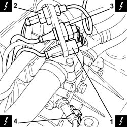
Applies to: engines: 3.2 V6; all production periods
1. Loosen band and disconnect the upper coolant inlet hose to the radiator thermostat side.
2. Loosen the band and disconnect the lower radiator coolant outlet hose from the radiator, thermostat side.
3. Loosen the band and disconnect the coolant return pipe from the climate control heater, thermostat side.
4. Undo the bolts (4a) and remove the thermostat (4b) complete with electrical connections box (4c).
5. Release the coolant outlet connector from the right cylinder head.
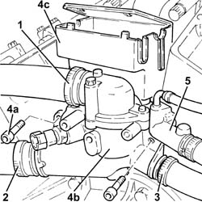
Applies to: engines: 3.2 V6; all production periods
1. Undo the bolts (1a) and remove the intake pipes (1b).
2. Remove the gaskets.
Discharge the fuel system pressure with the tool connected to the bleed valves on the fuel pipe.
 | Name | Country |
|---|---|---|
- | Rapid connector | 1.870.684.000 |
3. Disconnect the quick-release connector for the front fuel supply pipe, fuel pipe side.
4. Disconnect the electrical connections from the injectors.
| Name | Connector |
|---|---|---|
4 | Injector |
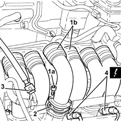
Applies to: engines: 3.2 V6; all production periods
1. Undo the bolts (1a) and remove the fuel pipe (1b), complete with injectors (1c).
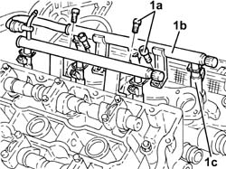
Applies to: engines: 3.2 V6; all production periods
1. Undo the bolts (1a) fixing the right head driven pullies, using the tool for counter-torque (1b).
| Name | Country |
|---|---|---|
1b | Counter-torque | 1.822.146.000 |
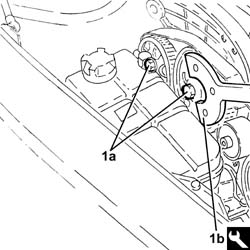
Applies to: engines: 3.2 V6; all production periods
1. Remove the right head toothed driven pullies (1a) using the tool (1b).
| Name | Country |
|---|---|---|
1b | Extractor | 1.860.954.001 |
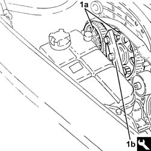
Applies to: engines: 3.2 V6; all production periods
1. Undo the bolt (1a) and remove the fixed timing belt tensioner (1b).
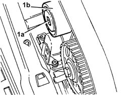
Applies to: engines: 3.2 V6; all production periods
1. Undo the bolts (1a) and remove the right rear timing gear cover (1b).
2. Undo the bolts (2a) and remove the timing belt moving tensioner (2b).
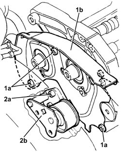
Applies to: engines: 3.2 V6; all production periods
1. Undo the nuts (1a) fixing the right cylinder head using the tool (1b).
| Name | Country |
|---|---|---|
1b | Spanner | 1.822.121.000 |
2. Remove the right cylinder head.
Remove the right cylinder head gasket.
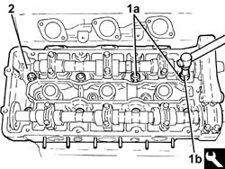
Applies to: engines: 3.2 V6; all production periods
Refitting
RemovingPlace the right cylinder head gasket back in its housing.
Refit the right cylinder head.
1. Tighten the nuts (1a) fixing the right cylinder head to the recommended torque using the angular tightening tools (1b) and (1c).
 | Fastening | Component | Ø | Value (daNm) |
|---|---|---|---|---|
1a | Nut | CYLINDER HEAD | M12 | (Engine crankcase side) 2.4 ÷ 2.6 + 228 ÷ 232 |
| Name | Country |
|---|---|---|
1b | Protractor | 1.860.942.000 |
| Name | Country |
|---|---|---|
1c | Spanner | 1.822.121.000 |
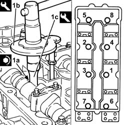
Applies to: engines: 3.2 V6; all production periods
Fit the timing belt mobile tensioner and fix it using the bolts without tightening them.
1. Fit the right rear protective timing gear cover (1a) and secure using the bolts (1b).
2. Fit the fixed timing belt tensioner (2a) and secure by tightening the bolts (2b) to the recommended torque.
| Fastening | Component | Ø | Value (daNm) |
|---|---|---|---|---|
2b | Bolt | FIXED TENSIONER | M10 | (Cylinder head side) 4.5 ÷ 5.5 |
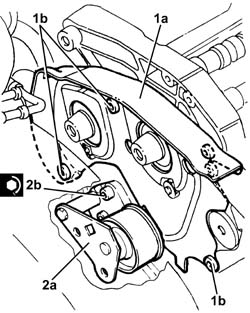
Applies to: engines: 3.2 V6; all production periods
Place the right cylinder head driven pullies back in their housings and secure them without tightening the bolts.
Place the fuel pipe, complete with injectors, back in its housing and fix it using the bolts.
Connect the electrical connections to the injectors.
Connect the quick-release connector for the front fuel supply pipe, fuel pipe side.
Place the inlet ducts complete with gaskets back in their housings and fix them using the bolts.
1. Refit the coolant outlet connector in its seating on the right cylinder head.
2. Place the thermostat (2a) complete with electrical connections box (2b) back in its housing and fasten it tightening the bolts (2c) to the recommended torque.
| Fastening | Component | Ø | Value (daNm) |
|---|---|---|---|---|
2c | Bolt | THERMOSTAT | M6 | (Cylinder head side) 0.8 ÷ 1.0 |
3. Connect the engine coolant return pipe from the climate control system heater, thermostat side, and tighten the band.
4. Connect the lower coolant outlet hose from the radiator, thermostat side, and tighten the band.
5. Connect the upper coolant inlet hose to the radiator, thermostat side, and tighten the band.
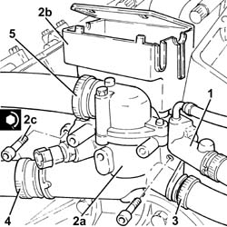
Applies to: engines: 3.2 V6; all production periods
Connect the electrical connection to the engine coolant temperature sensor.
Connect the electrical connection for the knock sensor flywheel side.
Connect the electrical connection for the cam angle sensor.
Connect the electrical connection for the rpm sensor.
Proceed with refitting 1080B39 right catalytic preconverter r r or replace cylinder head gasket .
Proceed with refitting 1076B84 right exhaust pipe between caralytic preconverter and converter r r .
Proceed with refitting 1076B82 left exhasust pipe between catalytic preconverter and converter r r .
Proceed with refitting 7210A15 R.R. HEADLAMP HOUSING/FRONT WING CROSSMEMBER .
Proceed with refitting 7025A34 bonnet lid lock (one) - r+r or repair .
Proceed with the refitting 5540B76 Front LIGHT CLUSTER with fog light (one), left or right - R.R. with interfering components removed (Right and left sides).
Proceed with refitting 7210E10 R.R. CENTRE PILLAR .
Proceed with refitting 1032B10 toothed timing belt - r + r for timing adjustment or replacement .
Proceed with refitting 1016A34 right-hand cam cover - r + r and replace gasket .
Proceed with refitting 5510C18 right hand cylinder head ignition coil - r+r .
Proceed with refitting 1072B50 sleeves connecting air capacity box to inlet manifold is - r+r .
Proceed with refitting 1016A30 left cam cover - r + r and replace gasket .
Proceed with refitting 5510C16 left hand cylinder head ignition coil - r+r .
Proceed with refitting 1016A42 left hand cylinder head ignition coil cover - r+r .
Proceed with refitting 1032D12 timing system protective cover(s) - r + r .
Proceed with refitting 1092A10 Crankshaft services PULLEY - R.R. .
Proceed with refitting 1092G10 single engine belt r r .
Proceed with refitting 7055B54 under-engine guard - r r .
Proceed with refitting 7055B42 Additional FRONT WHEEL ARCH (one), left or right - R.R. .
Proceed with refitting 7055B64 Engine compartment DUST shield in front wheel arch (one), left or right - R.R. .
Proceed with refitting 4450B04 right front wheel r r .
Fill the air conditioner coolant circuit 5040A10 Air conditioning refrigerant CIRCUIT - Draining and Refilling .
Proceed with refitting 5530B10 battery - r+r .
Remove the car from the ramps.
Topics linked from this page (28)
- 1016A30 left cam cover - r + r and replace gasket
- 1016A34 right-hand cam cover - r + r and replace gasket
- 1016A42 left hand cylinder head ignition coil cover - r+r
- 1032B10 toothed timing belt - r + r for timing adjustment or replacement
- 1032D12 timing system protective cover(s) - r + r
- 1072B50 sleeves connecting air capacity box to inlet manifold is - r+r
- 1076B82 left exhasust pipe between catalytic preconverter and converter r r
- 1076B84 right exhaust pipe between caralytic preconverter and converter r r
- 1080B39 right catalytic preconverter r r or replace cylinder head gasket
- 1092A10 Crankshaft services PULLEY - R.R.
- 1092G10 single engine belt r r
- 4450B04 right front wheel r r
- 5040A10 Air conditioning refrigerant CIRCUIT - Draining and Refilling
- 5510C16 left hand cylinder head ignition coil - r+r
- 5510C18 right hand cylinder head ignition coil - r+r
- 5530B10 battery - r+r
- 5540B76 Front LIGHT CLUSTER with fog light (one), left or right - R.R. with interfering components removed
- 7025A34 bonnet lid lock (one) - r+r or repair
- 7055B42 Additional FRONT WHEEL ARCH (one), left or right - R.R.
- 7055B54 under-engine guard - r r
- 7055B64 Engine compartment DUST shield in front wheel arch (one), left or right - R.R.
- 7210A15 R.R. HEADLAMP HOUSING/FRONT WING CROSSMEMBER
- 7210E10 R.R. CENTRE PILLAR
- K36 Engine temperature sender unit
- K46 RPM sensor
- K47 Timing sensor.
- K50 Detonation sensor - 1
- N70 Injector (cyl. 1)